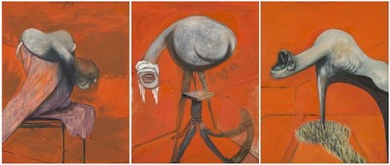

Three Studies for Figures at the Base of a Crucifixion
Francis Bacon · 1944 · Oil paint on 3 boards · 94 × 73.7 cm each · Tate, London
In copyright. Look and learn: shown for study, not for download.
The three panels were painted in two weeks in 1944, in a ground-floor flat at 7 Cromwell Place in South Kensington that worked as Francis Bacon's studio by day and an illicit casino at night. He painted on Sundeala fibre board, a cheap alternative to canvas, and the low oil content of the paint made the orange soak in unevenly. Eric Hall bought the triptych from the artist in 1945 and gave it to the Tate in 1953.